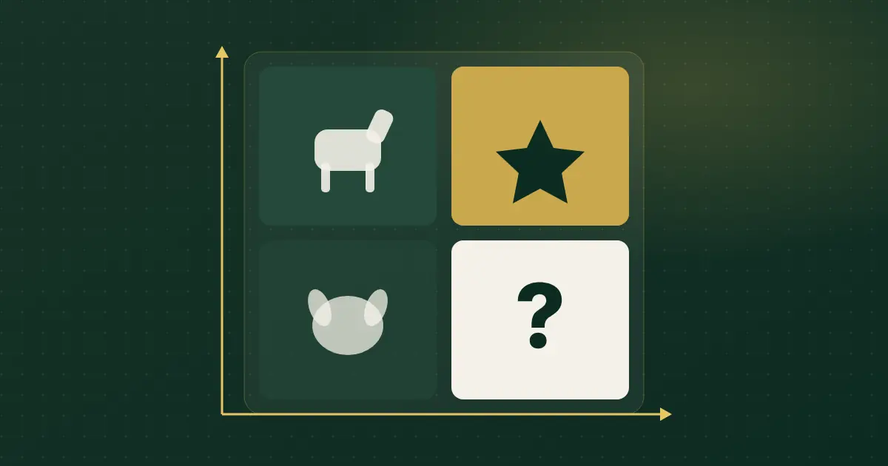

Menü Mühendisliği Nedir? Restoran Menüsünde Kârlılık Analizi
Çok satan ürün her zaman en çok kazandıran ürün değildir. Menü mühendisliği, her ürünü satış adedi ve tabak başına katkısıyla birlikte okumanın yöntemidir.

Kısa cevap
Menü mühendisliği, menüdeki her ürünü iki ölçüye göre sınıflandırma yöntemidir: ne kadar satıldığı (popülerlik) ve satış fiyatından maliyet düşüldükten sonra tabak başına ne bıraktığı (katkı payı). Sonuç dört gruptur: yıldız, at, bulmaca ve köpek.
Menü mühendisliği ne demek?
Menü mühendisliği, Michael Kasavana ve Donald Smith'in 1982'de yayımladığı yöntemle yaygınlaşmış bir menü analizidir. Temel fikri basittir: bir ürünü değerlendirmek için yalnızca kaç adet satıldığına değil, her satışta işletmeye ne bıraktığına da bakılır. Türkiye'de turizm ve gastronomi alanında bu yöntemi otel ve restoran menüleri üzerinde uygulayan akademik çalışmalar bulunur.
Hangi iki ölçü kullanılır?
Katkı payı
Katkı payı = Satış fiyatı − Ürün maliyeti. Burada maliyet, tabağa giren malzemelerin maliyetidir (reçete maliyeti). Kira ve personel gibi sabit giderler bu hesaba girmez; onlar katkı paylarının toplamından karşılanır.
Popülerlik
Bir ürünün, aynı kategorideki toplam satış içindeki payıdır. Kasavana-Smith yaklaşımında yaygın eşik, kategorideki ürün sayısına göre beklenen payın %70'idir. Örneğin kategoride 10 ürün varsa her birinin beklenen payı %10'dur; %7'nin üzerinde satan ürün "popüler" sayılır.
Dört grup: yıldız, at, bulmaca, köpek
Dikey eksen popülerlik, yatay eksen katkı payıdır.
Menü mühendisliği adım adım nasıl yapılır?
- Dönemi seçin. Bir ay gibi, menünün değişmediği bir zaman aralığı alın.
- Kategori bazında çalışın. Tatlıyı ana yemekle karşılaştırmak yanıltır.
- Her ürünün satış adedini çıkarın. Kaynak, kasa veya adisyon kayıtlarıdır.
- Reçete maliyetini hesaplayın. Malzeme miktarı × birim fiyat; fire payını da ekleyin.
- Katkı payını bulun ve kategorinin ağırlıklı ortalama katkı payını hesaplayın (toplam katkı ÷ toplam adet).
- Popülerlik eşiğini hesaplayın (1 ÷ ürün sayısı × 0,70).
- Her ürünü dört gruptan birine yerleştirin.
Örnek hesap (temsili rakamlarla)
Aşağıdaki tablo yöntemi göstermek için uydurulmuş temsili değerler içerir; gerçek bir işletmeye ait değildir.
| Ürün | Adet | Fiyat | Maliyet | Katkı | Grup |
|---|---|---|---|---|---|
| Ürün A | 120 | 400 | 140 | 260 | Yıldız |
| Ürün B | 150 | 320 | 170 | 150 | At |
| Ürün C | 30 | 450 | 150 | 300 | Bulmaca |
| Ürün D | 25 | 300 | 180 | 120 | Köpek |
Dört ürün için popülerlik eşiği %17,5'tir (¼ × 0,70). Toplam 325 adette Ürün C (%9,2) ve D (%7,7) eşiğin altında kalır. Ağırlıklı ortalama katkı yaklaşık 200'dür; A ve C bunun üzerindedir.
Her grup için ne yapılır?
Yıldız: koruyun
Reçeteyi ve sunumu standart tutun, menüde görünür yerde bırakın. Fiyat hassasiyetini küçük adımlarla test edebilirsiniz.
At: maliyeti gözden geçirin
Misafir seviyor ama tabak başına az bırakıyor. Porsiyonu, pahalı bir bileşeni veya garnitürü yeniden düşünün; yüksek katkılı bir yan ürünle birlikte önerin.
Bulmaca: görünür yapın
Kazandırıyor ama az seçiliyor. Adını ve açıklamasını iyileştirin, iyi bir fotoğraf ekleyin, menüde öne alın veya "Önerilen" gibi bir rozetle işaretleyin. Personelin önerebilmesi için tadımını yaptırın.
Köpek: karar verin
Menüden çıkarmayı, yeniden kurgulamayı veya fiyatlamayı değerlendirin. Bazı ürünler başka bir ürünün satışını taşıdığı için (ör. çocuk menüsü) bilerek tutulur; bu kararı veriyle verin.
Sık yapılan hatalar
- Maliyeti tahmin etmek. Analiz, maliyet verisi kadar doğrudur. Malzeme fiyatı değiştiğinde maliyet de güncellenmelidir.
- Kategorileri karıştırmak. İçecekle ana yemek aynı matriste kıyaslanmaz.
- Tek seferlik yapmak. Fiyatlar ve maliyetler değiştikçe analiz düzenli tekrarlanmalıdır.
- Menü görüntülemesini satış sanmak. Dijital menüde bir ürünün çok tıklanması, çok satıldığı anlamına gelmez.
Menü mühendisliği dijital menüde nasıl yapılır?
Tabloyla yapılabilir; ama ürün ve fiyat zaten dijital menüdeyse maliyeti de aynı yerde tutmak iş yükünü azaltır. QR Menu Official'ın Menü Mühendisliği modülünde malzeme birim fiyatı ve reçeteden ürün maliyeti hesaplanır ya da maliyet doğrudan girilir; ürünler satış ve maliyet verisine göre popülerlik ve kârlılık gruplarına yerleştirilir. Maliyeti girilmeyen ürün matrise alınmaz — yöntem sizin verinizle çalışır, kendi kendine kârlılık üretmez.
Analiz sonrası bulmaca ürünleri öne çıkarmak için menü düzeni de önemlidir; dijital menü hazırlama rehberine bakın.
Ürünlerinizin popülerlik ve kârlılığını yan yana görün. Menü Mühendisliği Plus pakette yer alır.
Modülü İnceleyinSık sorulan sorular
Menü mühendisliği için hangi veriler gerekir?
Belirli bir dönemdeki ürün bazlı satış adetleri, satış fiyatları ve her ürünün reçete maliyeti. Maliyet verisi olmadan katkı payı hesaplanamaz.
Popülerlik eşiği nasıl hesaplanır?
Kasavana-Smith yaklaşımında yaygın kullanım: (1 ÷ kategorideki ürün sayısı) × 0,70. Bu oranın üzerinde pay alan ürün popüler kabul edilir.
Menü mühendisliği ne sıklıkla yapılmalı?
Sabit bir kural yoktur. Malzeme fiyatları, menü fiyatları veya menü içeriği değiştiğinde analizin tekrarlanması anlamlıdır.
Köpek ürünleri hemen menüden çıkarmalı mıyım?
Her zaman değil. Bazı ürünler başka satışları desteklediği veya belirli bir misafir grubunu karşıladığı için tutulabilir. Karar verirken maliyet ve satış verisini birlikte değerlendirin.
Dijital menüdeki tıklama verisi satış verisi yerine kullanılabilir mi?
Hayır. Tıklama ilgiyi gösterir; satış adedi için kasa veya sipariş kayıtları gerekir.
Kaynaklar
- Kasavana, M. L. & Smith, D. I. (1982). Menu Engineering: A Practical Guide to Menu Analysis
- DergiPark — Menü mühendisliği üzerine Türkçe akademik çalışmalar
- YÖK Açık Bilim — Yiyecek içecek işletmelerinde menü mühendisliği ve fiyatlama yöntemlerinin analizi
Son kontrol: 30 Ekim 2026. Yazıda yer alan ürün özellikleri QR Menu Official'ın mevcut paket içeriğiyle sınırlıdır.